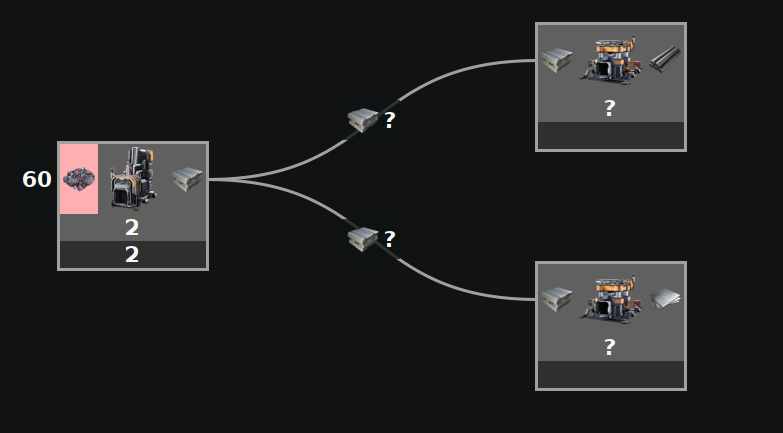
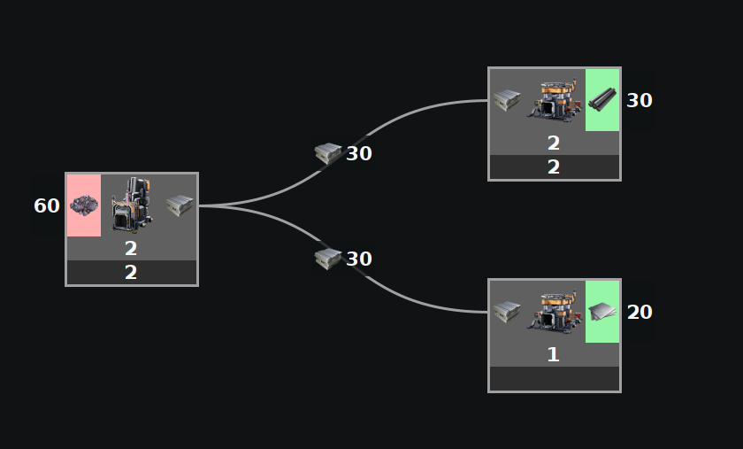
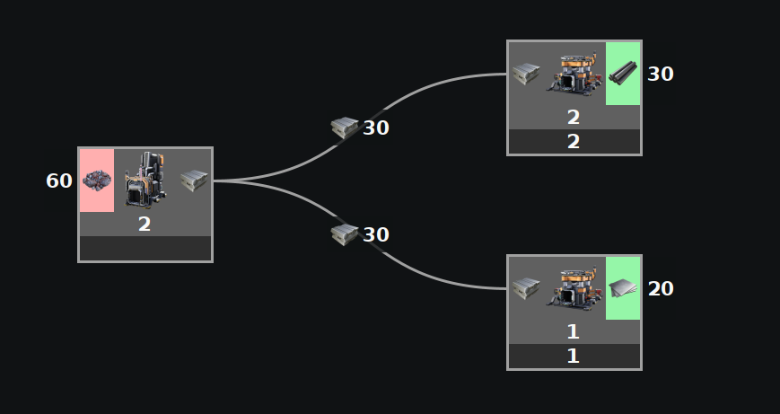
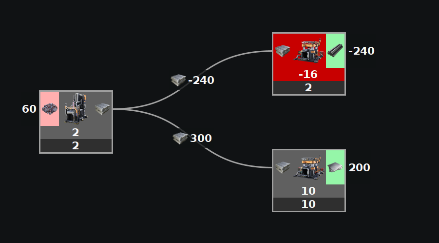
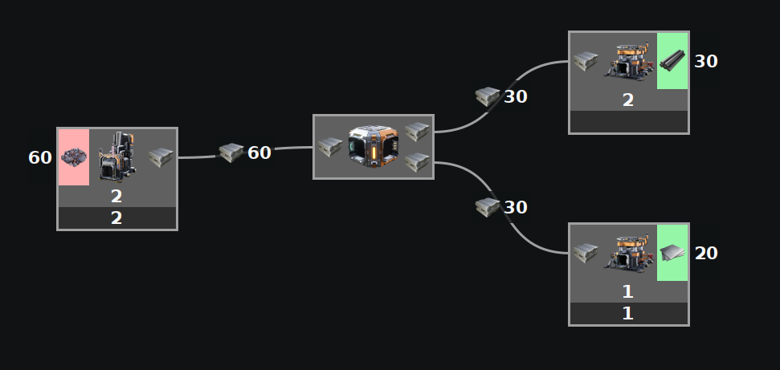

This does NOT take into account splitter or merger preference to split/merge evenly, nor does it take into account priority splitters or mergers.
The values entered in this mode are NOT limits, but rather the final values that you want to see.
This mode is most like using a spreadsheet.
If you do not enter enough information, some things can not calculate a value. If you enter too much conflicting information such that they cannot all be true, some with be arbitrarily ignored.
This should always be fast.
Examples

This does NOT take into account splitter preference to split evenly. This does not have enough information to be able to define how the items are split. For this example, you need exactly 2 of the 3 machines defined.

This has 2 of the 3 defined, so it can figure out the third.

This also has 2 of the 3 defined, so it can figure out the third. It does not matter which 2 of the 3.

This has 3 definitions, which is more than the 2 needed, so one is arbitrarily ignored. This may not return the same results every time. In this case, the rods were ignored. In addition, the plates take more ingots than are available, which calculates negative rods to balance out. To fix this, remove one of the definitions and fix the impossibility of plates taking more ingots than are available.

Priority splitters and mergers are ignored and treated just like any other splitter or merger.